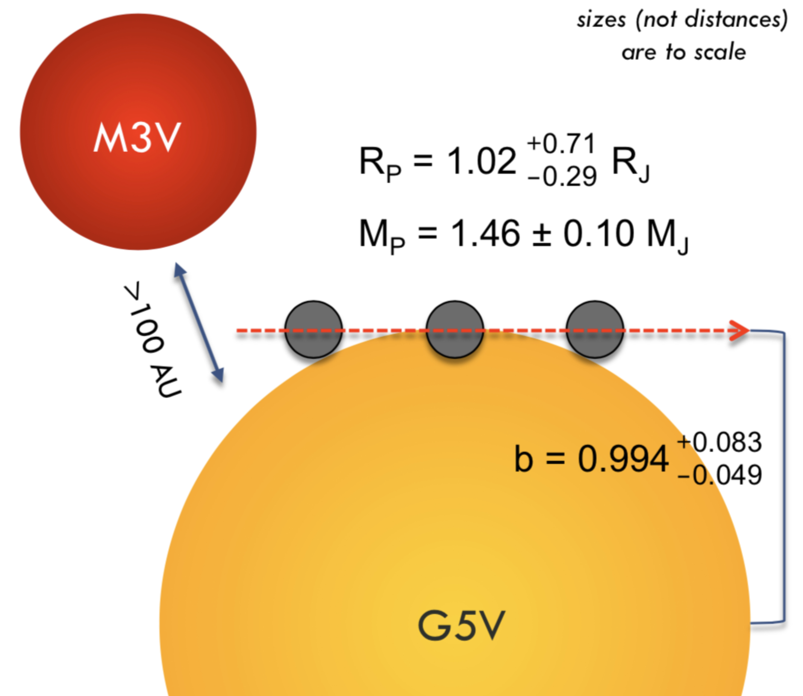

Exoplanets
Exoplanets (worlds around stars other than our Sun) have captured my imagination since the launch of the first planet-hunting telescope, Kepler, in 2009. I decided in high school that I wanted to search for exoplanets myself, with the eventual goal of discovering a planet that hosted life.
This dream led me to my doctoral research at Yale, carried out with the mentorship of a veteran planet-hunter, Prof. Debra Fischer. I spent six years developing new tools for detecting planets through the radial velocity method, contributing to exoplanet confirmations, and grappling with one of the largest obstacles currently in the way of discovering Earth-like planets: separating the faint signal of a planet from the noise introduced by the star itself. I was awarded a National Science Foundation Graduate Research Fellowship to support my work on this last topic.
Hot Jupiters
Hot Jupiters are gas giant planets that orbit extremely close to their host stars, completing a full orbit in just a few days. Their large size and short orbital periods make them among the easiest exoplanets to detect, yet they remain genuinely mysterious objects. How did they get so close to their stars? Did they form there, defying our models of planet formation in intense radiation environments? Or did they form farther out and migrate inward over millions of years, driven by gravitational interactions with other planets or the protoplanetary disk?
From 2018 to 2019, I collected radial velocity data using the CHIRON spectrograph at the SMARTS 1.5m telescope at the Cerro Tololo Inter-American Observatory in Chile. My targets were planet candidates identified by NASA's TESS mission — a space telescope that detects planets by watching for the tiny dimming of starlight as a planet crosses in front of its host star. While a transit tells you that something is blocking the star, it doesn't tell you the mass of that object. Radial velocity measurements fill in that crucial piece: by tracking the Doppler shift of the star's spectrum as it is tugged back and forth by an orbiting planet, we can determine the planet's mass and confirm that the transiting object is truly a planet rather than, say, a faint background star or a grazing binary.
My observations contributed to the confirmation of nine hot Jupiters from the TESS planet candidate list. I led the confirmation efforts for two of them: TOI-564 b and TOI-905 b.
TOI-564 b: A Grazing Hot Jupiter
System architecture of TOI-564 b.
Of the two planets I confirmed, TOI-564 b is the more unusual. It is a classical hot Jupiter — with a mass of 1.46 Jupiter masses and an orbital period of just 1.65 days — but it is distinguished by an extraordinarily high transit impact parameter of 0.994. The impact parameter describes where on the stellar disk the planet crosses during a transit, with 0 meaning dead center and 1 meaning the planet appears to just grazes the star's edge from our point of view. TOI-564 b produces what is known as a grazing transit, where only a part of the planet's disk ever overlaps the star. This makes it one of only about 20 known systems worldwide to exhibit a convincing grazing transit, and the host star is one of the brightest among them.
The grazing geometry presents challenges, but also opportunies, for characterizing this planetary system. On one hand, it makes the planet's radius difficult to constrain precisely, since the transit depth depends sensitively on the exact alignment. On the other hand, it creates a unique scientific opportunity: grazing transits are exquisitely sensitive to small changes in orbital inclination over time. If an unseen planet orbits farther out in the system, its gravitational pull would cause TOI-564 b's orbital plane to precess, shifting the impact parameter and producing measurable changes in the transit's duration and depth over a timescale of years. This makes TOI-564 b one of the most promising systems in the sky for detecting hidden, nontransiting planets through long-term photometric monitoring.
The system has an additional wrinkle: high-resolution imaging revealed a faint stellar companion located about 0.5 arcseconds away — likely an M-dwarf star at a projected separation of roughly 100 AU from the primary. This is visible in the diagram, which illustrates the system's architecture to scale in size (though not in distance). The presence of a wide stellar companion raises interesting questions about whether it could have played a role in the dynamical history of the hot Jupiter through Kozai-Lidov interactions or other gravitational mechanisms.
Stellar Activity
The central challenge in detecting small exoplanets with the radial velocity method isn't the precision of the instruments — it's the stars themselves. Stars are not perfect, quiet spheres. Their surfaces are covered in magnetic features: starspots, faculae, and convective flows that evolve over days, months, and years. These features introduce subtle distortions in the stellar spectrum that masquerade as Doppler shifts, injecting a confusing noise signal — called stellar activity — that can overwhelm or mimic the signature of a small planet.
Much of my PhD work was focused on this problem. Rather than simply trying to subtract activity signals after the fact, I investigated what information is contained within the shape and structure of spectral lines themselves. A planet causes a clean, uniform Doppler shift across the entire spectrum. Stellar activity, by contrast, affects different parts of the spectrum in subtly different ways, depending on the temperature, pressure, and magnetic environment of the emitting region. In principle, that difference should be detectable.
Using techniques from data science — including principal component analysis applied to high-resolution spectral time series — I showed that the information needed to distinguish planetary radial velocity signals from stellar activity signals is indeed encoded in the spectra. The challenge is that extracting it requires spectrographs with exceptional resolution, signal-to-noise ratio, and long-term instrumental stability. My work pointed toward the kinds of instruments and methods that will be needed to push radial velocity planet detection into the regime of Earth-mass planets.
EXPRES
I was a member of the EXPRES (Extreme Precision Spectrograph) team at Yale from 2014 to 2019, spanning nearly my entire time as a graduate student. EXPRES is a state-of-the-art fiber-fed echelle spectrograph designed with a single ambitious goal: to detect Earth-mass planets orbiting Sun-like stars using the radial velocity method. Achieving that goal requires measuring Doppler shifts smaller than 30 centimeters per second — a tiny fraction of a pixel on a detector — with perfect repeatability over years of observations.
I contributed to the instrument across several stages of its development and early operation. During commissioning, I helped verify that the instrument was performing as designed, working through the painstaking process of characterizing its behavior on sky. I wrote early versions of the data reduction pipeline — the software that transforms raw detector images into calibrated, science-ready spectra. And I participated in some of the instrument's first scientific observations, getting to know its quirks and capabilities up close.
EXPRES is now installed at the Lowell Discovery Telescope (LDT) in Happy Jack, Arizona, where it is achieving on-sky radial velocity precisions of approximately 30 cm/s, placing it among the most precise spectrographs in the world. It is an instrument built to find the next Earth.